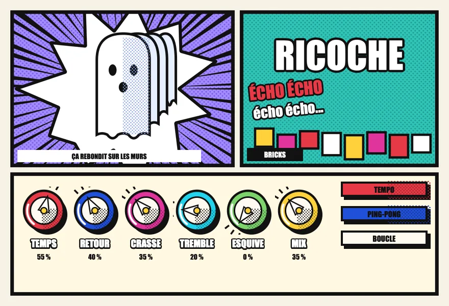
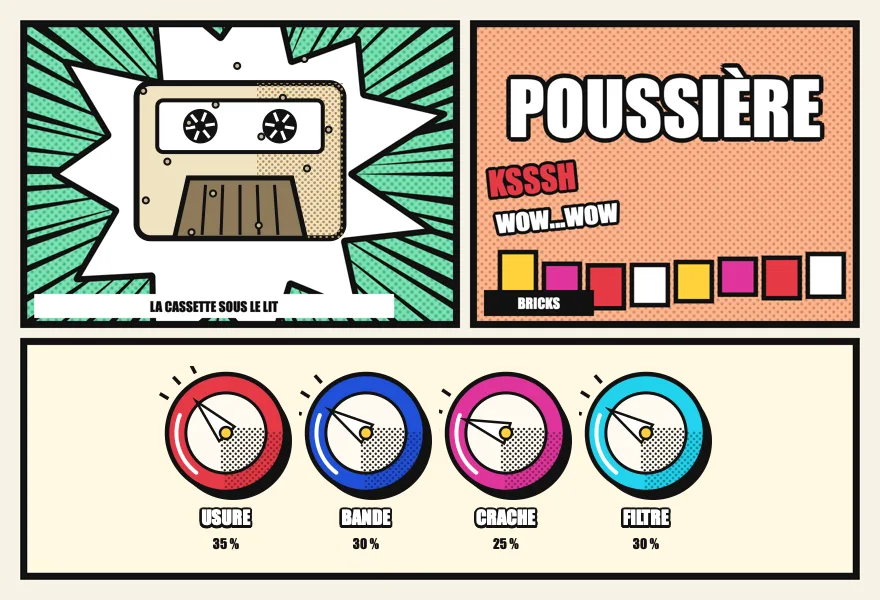
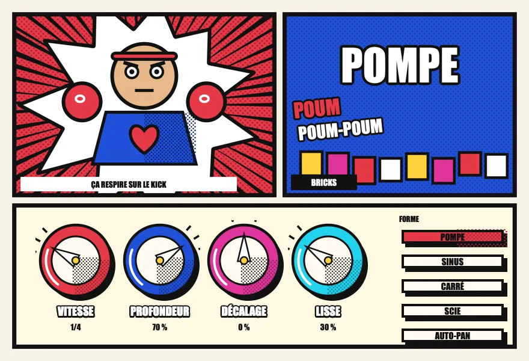
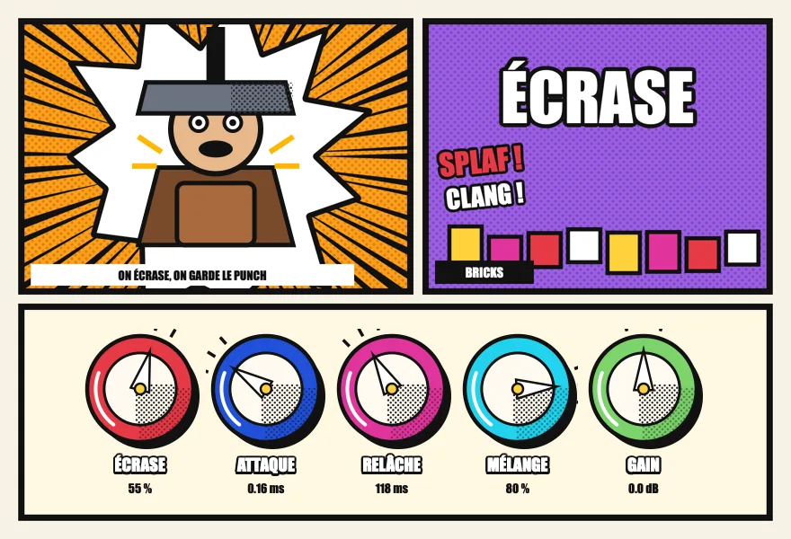
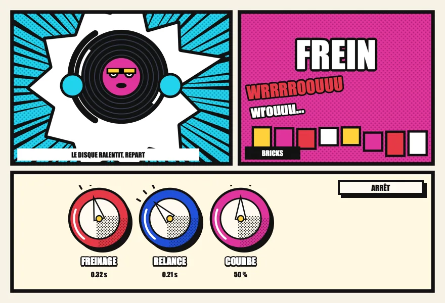
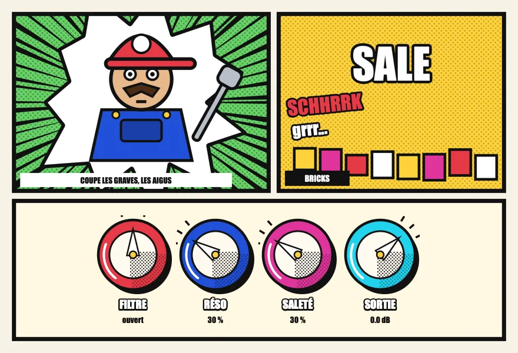
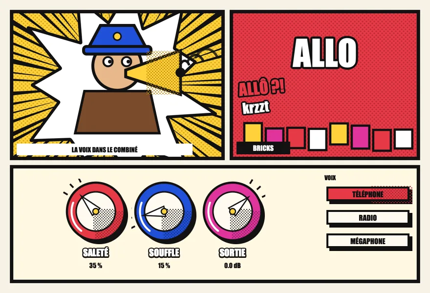
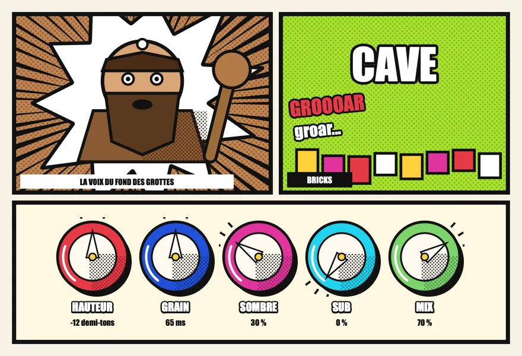
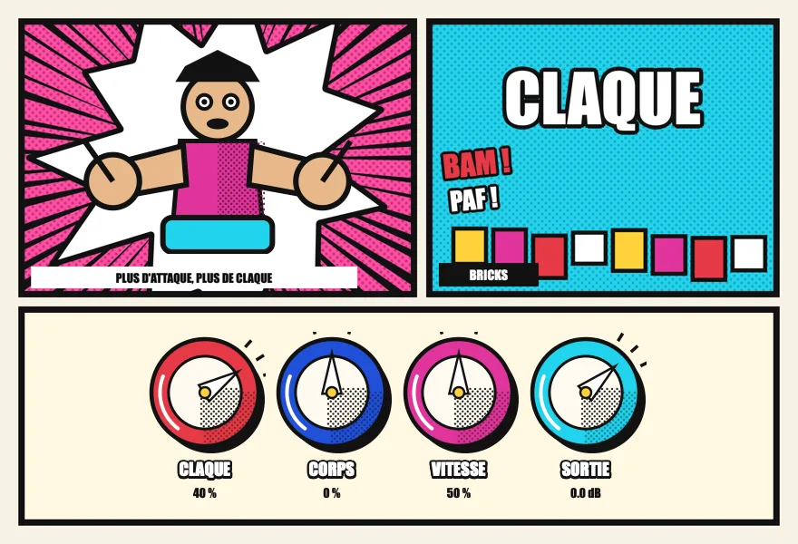
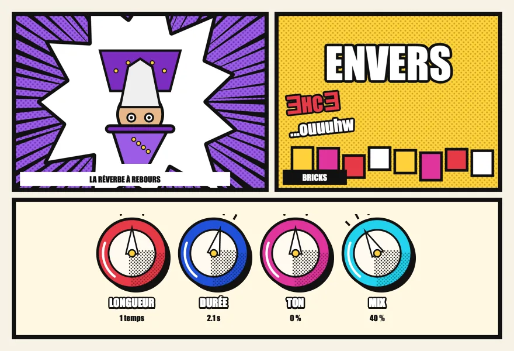

Comics
La gamme en bande dessinée : un personnage par plug-in, des couleurs franches, et des outils pensés pour aller vite. Du son sérieux, sans prise de tête.

Synthés
Cinq synthés, de l’oscillateur classique aux cercles qu’on déplace pour dessiner le son.


Effets
Des effets simples, un personnage chacun : quelques gros potards, un effet immédiat.

Hoquet
Stutter calé sur le tempo

Ricoche
Délai : tempo ou libre, ping-pong, bande sale

Plaque
Réverbe à plaque

Casse
Destruction à quatre caractères

Poussière
Cassette et lo-fi

Pompe
Sidechain rythmique

Écrase
Compresseur écrasé en parallèle

Frein
Arrêt de bande et relance

Sale
Filtre de DJ sale

Allo
Téléphone, radio, mégaphone

Hachoir
Gate rythmé

Cave
Voix de cave, octave grave

Claque
Transient shaper

Envers
Réverbe inversée

Multi FX
Multi-effets · six effets, enveloppes et LFO
Boîtes à rythmes et outils
Des boîtes à rythmes à générer, et l’outil qui range vos samples.


Téléchargements
Tous les plug-ins Comics.
Audio Unit et VST3 pour macOS, signés et validés par Apple. Un installeur pour les synthés, un pour les effets : on peut n’installer que certains plug-ins. Les boîtes à rythmes et l’outil de classement ont chacun leur téléchargement.